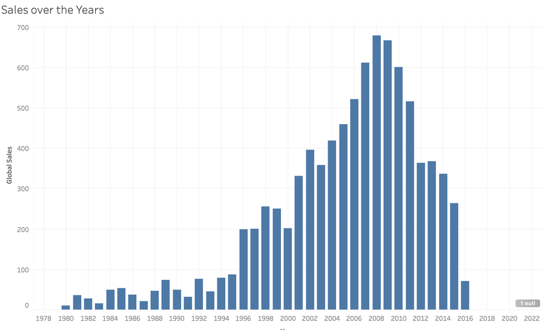

?teacher=1 בכתובת הדף: מה לומר, איפה לעצור ומה לבדוק לפני שממשיכים.מתחילים מה נבנה במודול הזה. מכירים את המסך של Tableau Public ובונים עליו את חמשת הגרפים הראשונים של Scoop & Go: עמודות של מכירות לפי קטגוריה, קו של מכירות לפי חודש, טבלת טקסט של קטגוריה מול ערוץ, תרשים פיזור של מכירות מול רווח לפי מוצר, ועמודות של ממוצע לשורה. בסוף יש לכם חוברת עבודה עם חמישה גיליונות עם שמות, מספרים שבדקתם מול הנתונים, והבנה של איך Tableau בונה גרף מגרירה.
מה להכין. קובץ scoop_sales_2024_2025.csv טעון ב-Tableau Public (איך מחברים: מודול 2), וגיליון ריק פתוח. אם עוד לא התקנתם, התחילו במודול 1.
איך עובדים כאן. כל גרף נבנה פעמיים. קודם במגרש המשחקים בדפדפן (הדמיה של Tableau, לא התוכנה עצמה), כדי להרגיש את הלוגיקה של המדפים בלי להתקין כלום. אחר כך ב-Tableau Public עצמו, צעד אחר צעד, עם תוצאה צפויה שחישבנו מהנתונים כדי שתוכלו לבדוק את עצמכם. כל מה שכאן עובד ב-Tableau Public בלבד. בעריכה בדפדפן (web authoring) הרעיונות זהים, ושמות הכפתורים בסרגל הכלים עשויים להיות שונים מעט.
המסך של Tableau: איפה כל דבר נמצא
מנהלת Scoop & Go שואלת שאלה פשוטה: איזו קטגוריה מכניסה הכי הרבה כסף? כדי לענות ב-Tableau לא כותבים נוסחה. גוררים שדות למקומות הנכונים. לכן הצעד הראשון הוא לדעת איפה נמצא כל מקום, ומה הוא עושה.
Sheet 1 שמראה מכירות לפי קטגוריה. כמה גיליונות יחד נשמרים בקובץ אחד שנקרא חוברת עבודה (Workbook).הדמיה של המסך, עם הגרף הראשון שנבנה בהמשך
זו הדמיה סכמטית, לא צילום. המספרים זהים לאלה שבצילום האמיתי שמתחת.
1Data pane
Dimensions
Measures
- Data pane: כל השדות של הקובץ. ממדים למעלה, מדדים למטה.
- Columns: מה נפרס לרוחב.
- Rows: מה נפרס לאורך.
- Marks: סוג הסימן, צבע, גודל, תוויות, פירוט וטולטיפ.
- Filters: סינון שורות.
- Show Me: הצעה של גרף לפי השדות שנבחרו.
- Sheet tabs: הגיליונות, עם כפתור להוספת גיליון.
- Canvas: אזור הגרף, וגם כותרת הגיליון.
- Pages: דף אחרי דף, כמו סרט.
- Toolbar: ביטול, גיליון חדש, מיון, תוויות.
- Status bar: ספירת סימנים וסכום של מה שנבחר.
אותו מסך בצילום אמיתי

| # | אנגלית על המסך | מה זה | מה עושים שם ב-Scoop & Go |
|---|---|---|---|
| 1 | Data pane | רשימת כל השדות בקובץ. ממדים (כחולים) מעל הקו הדק, מדדים (ירוקים) מתחתיו. | גוררים משם: Category, Sales, Order Date. |
| 2 | Columns | מדף. מה שמניחים בו נפרס לרוחב: כותרות מימין לשמאל, או ציר אופקי. | שמים Category ומקבלים חמש כותרות לרוחב. |
| 3 | Rows | מדף. מה שמניחים בו נפרס לאורך: כותרות בצד, או ציר אנכי. | שמים SUM(Sales) ומקבלים ציר אנכי של כסף. |
| 4 | Marks | כרטיס שקובע איך נראה כל סימן: סוג הסימן, ואז Color, Size, Label, Detail, Tooltip. | בוחרים עמודה או קו, צובעים לפי אזור, מוסיפים תוויות. |
| 5 | Filters | מדף שמסנן שורות לפני שהן מסוכמות. | למשל להשאיר רק Channel = App. |
| 6 | Show Me | כפתור שפותח לוח של סוגי גרפים. Tableau מדגישה את זה שמתאים לשדות שבחרתם. | בוחרים Category ו-Sales ולוחצים. נחזור לזה בסעיף 6. |
| 7 | Sheet tabs | לשוניות בתחתית: Data Source (החיבור), הגיליונות, וכפתורים לגיליון, דשבורד וסיפור חדשים. | עוברים בין Sheet 1 לגיליון הבא, וגם משנים שם. |
| 8 | Canvas (אזור הגרף) | השטח שבו הגרף מצויר. כשהוא ריק כתוב בו Drop field here. | אפשר לגרור שדה ישר לשם, ו-Tableau תבחר מדף. |
| 9 | Pages | מדף שמפצל את הגרף לדפים לפי שדה ומריץ אותם כמו סרט. | לא נשתמש בו במודול הזה. חשוב רק לדעת שהוא קיים. |
| 10 | Toolbar | שורת הכפתורים למעלה: ביטול, גיליון חדש, מיון, תוויות, ועוד. | נשתמש ב-Undo, Sort, Show Mark Labels. |
| 11 | Status bar | שורת המצב בתחתית. בדרך כלל כתוב בה כמה סימנים יש בגרף וסכום של מה שנבחר. | בודקים שיש 5 marks בגרף הראשון. |

Data בצילום אמיתי (vgsales). ממדים מעל הקו הדק, מדדים מתחתיו. השדות בנטוי הם שדות ש-Tableau יוצרת לבד: Measure Names, Measure Values וספירת השורות (Count). בקובץ שלכם יופיע scoop_sales_2024_2025.csv (Count).
Filters ו-Marks. שדה שנבחר מסומן בחלונית. מעל החלונית יש תיבת חיפוש שימושית כשיש הרבה שדות.עוד כרטיסים שמופיעים כשצריך: מקרא (Legend) כשמשתמשים בצבע, כותרת הגיליון (Title) וכיתוב (Caption). כל הכרטיסים אפשר להציג ולהסתיר.
אפשר לחלק את המסך לשלושה חלקים: חומר גלם (חלונית Data), מבנה (Columns, Rows, Filters, Pages) ומראה (כרטיס Marks). כל שאלה של "למה הגרף נראה ככה" נענית בדרך כלל בהסתכלות על המבנה ועל המראה, לא על החומר.
משחק קצר: מצאו את המקום
זו הדמיה של המסך. בכל שאלה לחצו על המקום הנכון. אחרי שמונה תשובות נכונות הפעילות נרשמת.
מכירים את המסך בתוכנה. קובץ ה-CSV של Scoop & Go טעון ב-Tableau Public.
- לחצו על הלשונית
Sheet 1בתחתית המסך.למה: בעמודData Sourceרק מחברים נתונים. הגרפים נבנים בגיליון. - בחלונית
Dataסמנו בעצמכם מה כחול ומה ירוק. ספרו כמה שדות יש מעל הקו הדק וכמה מתחתיו.למה: זה מה ש-Tableau הבינה מהקובץ. אם משהו נראה לא הגיוני, עדיף לגלות עכשיו. - מצאו את שמונת המקומות מהצילום (Data, Columns, Rows, Marks, Filters, Show Me, לשוניות, אזור הגרף) ואת שורת המצב בתחתית.למה: ככה לא מחפשים מדף באמצע בנייה.
- העבירו את העכבר מעל
Show Meופתחו אותו בלחיצה אחת. אל תבחרו עדיין גרף. סגרו אותו.למה: רק להכיר. הלוח ריק כל עוד לא בחרתם שדות. - הסתירו את הכרטיס
Filtersוהחזירו אותו: בכפתורShow/Hide Cardsשבסרגל הכלים, או בתפריטWorksheetואזShow Cards.למה: במסך קטן כרטיסים תופסים מקום. כדאי לדעת שהם לא נעלמו, רק מוסתרים. בגרסה שלכם ייתכן שהכפתור נמצא במקום קצת אחר.
תוצאה צפויה: בחלונית Data בערך 9 שדות כחולים (Branch Code, Branch, Category, Channel, City, Item, Order Date, Order ID, Region) ו-7 ירוקים (Cost, Discount, Order Hour, Profit, Quantity, Sales, Unit Price), ובסוף השורה scoop_sales_2024_2025.csv (Count) שהיא ספירת שורות. שימו לב ש-Order Hour ירוק אף על פי שהוא שעה, ולא מספר שמסכמים. נחזור אליו. אם Order Date לא מופיע עם סמל לוח שנה, חזרו למודול 2 ותקנו את סוג הנתונים. באמצע המסך, בגיליון ריק, כתוב Drop field here.
אם אתם בעריכה בדפדפן: אותה חלונית שדות, אותם מדפים ואותו כרטיס Marks. סרגל הכלים בנוי אחרת, וייתכן שחלק מהפעולות נמצאות בתפריטים.

Data Source ו-Sheet 1 עם כפתורי גיליון, דשבורד וסיפור חדשים, ומימין שורת המצב.רוצים שהגרף יראה רק את ערוץ ה-App. איפה מתחילים?
גם בתוכנית ההדרכה הרשמית של Tableau הצעד הראשון הוא להסתכל על חלונית הנתונים ועל המדפים, ואז לבנות תצוגה אחת מגרירה של שני שדות. אנליסטים מנוסים שומרים על הכלל שגיליון אחד עונה על שאלה אחת, ונותנים לו שם. הדשבורדים נבנים אחר כך מגיליונות כאלה.
Order Hour ו-Branch Code זוהו כצפוי. הצילומים במודול הם מ-macOS עם הנתונים vgsales, ולכן אצל חלק מהסטודנטים הכפתורים נראים קצת אחרת.איך Tableau בונה גרף מגרירה
כשגוררים שדה למדף, Tableau לא מציירת תמונה. היא מסכמת את הנתונים לטבלה קטנה ומציירת אותה. ארבעה כללים מספיקים כדי לחזות מראש מה תקבלו, ולהבין למה קיבלתם משהו אחר.
Category מחלק את 6,575 שורות הנתונים לחמש קבוצות: Cones 1,437, Cups 1,974, Drinks 1,606, Sticks 801, Sundaes 757 שורות.Sales הוא הסכום ששולם בכל שורה. אגרגציה (Aggregation) היא החישוב שמצמצם הרבה שורות למספר אחד, כמו סכום או ממוצע. הדוגמה: סכום המכירות של 1,974 שורות ה-Cups הוא 69,470.00.SUM.ארבעה כללים
1. ממד מפצל, מדד מסכם
ממד על מדף מחלק את הנתונים לקבוצות. מדד על מדף מסכם את הקבוצה למספר אחד.
2. כחול יוצר כותרות, ירוק יוצר ציר
פיל כחול (בדיד) על Columns או Rows נפרש לכותרות. פיל ירוק (רציף) נפרש לציר עם סקאלה.
3. סימן אחד לכל צירוף של ממדים
הסימנים (Marks) הם העמודות, הנקודות והמספרים. יש סימן לכל צירוף שונה של ערכי הממדים שבגרף.
4. סוג הסימן נקבע לפי המדפים
במצב Automatic Tableau בוחרת בלבד: ממד עם מדד נותן עמודות, תאריך עם מדד נותן קו, שני ממדים נותנים טקסט.
הנפשה: גרירה אחת ועוד גרירה
עברו שלב אחר שלב. שימו לב ששני השדות לא עושים אותו דבר: אחד מפצל ואחד מסכם.
- גיליון ריק. אין עדיין שדות, ולכן אין מה לצייר.
- גוררים את Category (כחול, ממד) אל Columns.
- Tableau מחלקת את 6,575 השורות לחמש קבוצות ופורסת חמש כותרות. עדיין אין מדד, ולכן אין סימנים.
- גוררים את Sales (ירוק, מדד) אל Rows. הוא נהיה SUM(Sales) ומקבל ציר.
- בכל כותרת Tableau מסכמת את המכירות של הקטגוריה ומציירת עמודה. כרטיס Marks אומר Bar כי יש ממד אחד ומדד אחד.
- הכלל: הממד קובע כמה סימנים יהיו, והמדד קובע את הגובה של כל אחד.
זה גם מה שנקרא רמת פירוט (Level of Detail) של הגרף: הממדים שנמצאים בו קובעים כמה שורות של "נתונים מסוכמים" יש. עם Category בלבד יש חמש. אם תוסיפו Region יהיו עשרים, כי יש עשרים צירופים של קטגוריה ואזור בנתונים. מדד לא משנה את מספר הסימנים. הוא רק קובע מה הערך שלהם.

Year על Columns, SUM(Global Sales) על Rows ו-Genre על Color. הממד שעל Color מוסיף סימנים בכל עמודה, והם נערמים זה על זה. בכל עמודה יש 12 סימנים, אחד לכל ז'אנר.מגרש משחקים: מדפים ראשונים
זו הדמיה של Tableau בדפדפן, עם נתוני Scoop & Go אמיתיים. אפשר לגרור שדות, או ללחוץ על שדה ואז על מדף. המשימה הראשונה: לבנות את העמודות האופקיות של הרווח לפי סניף.
לפני שגוררים: שימו Region על Columns ו-SUM(Profit) על Rows. כמה סימנים תראו ומה סוג הסימן? ועכשיו הוסיפו Channel לתיבה Color בכרטיס Marks. כמה סימנים יהיו? נסו לחשוב לפני שאתם בודקים במגרש.
בגרף יש Region על Columns, Channel על Color ו-SUM(Sales) על Rows. כמה סימנים בו?
צבע הפיל הוא לא סוג השדה. בדרך כלל ממדים כחולים ומדדים ירוקים, ולכן אנשים חושבים שכחול שווה ממד. בפועל כחול וירוק אומרים בדיד או רציף. תאריך יכול להיות כחול או ירוק, ומספר יכול להיות מומר לכחול. הכלל לשינון: כחול הוא כותרות, ירוק הוא ציר. את זה נתרגל לעומק במודול 4.
הדרך הרשמית של Tableau ללמד את התצוגה הראשונה היא בדיוק כך: שני שדות, גרירה אחת לכל אחד, ואז לראות מה Tableau בחרה לצייר. אחר כך מתקנים בכרטיס Marks. אין "לבחור גרף" בהתחלה. בוחרים שדות.
גרף העמודות הראשון: מכירות לפי קטגוריה
השאלה של מנהלת Scoop & Go: איזו קטגוריה מוכרת הכי הרבה? זה גרף עמודות פשוט: קטגוריה אחת לכל עמודה, וגובה שמראה את סכום המכירות. נבנה אותו קודם במגרש, ואז ב-Tableau Public.
קודם במגרש
שימו לב להסבר הצהוב מתחת לגרף. הוא אומר מה Tableau עשתה ולמה. עכשיו הפכו את הצירים ומיינו, כמו בתוכנה האמיתית:
עכשיו ב-Tableau Public
גרף עמודות: Sales לפי Category. גיליון חדש וריק פתוח, עם נתוני Scoop & Go.
- גררו את
CategoryמחלוניתDataאל המדףColumns.למה: Category הוא ממד. הוא מחלק את הנתונים לחמש קבוצות ויוצר חמש כותרות. - גררו את
Salesאל המדףRows.למה: Sales הוא מדד. Tableau מסכמת אותו לכל קטגוריה ומציירת עמודה. הפיל נהיהSUM(Sales)וצבעו ירוק. - בדקו את הכרטיס
Marks: כתוב בוAutomaticעם סמל של עמודות.למה: Tableau בחרה לבד עמודות כי יש ממד אחד ומדד אחד. - העבירו את העכבר מעל העמודה של
Cupsומעל זו שלSticks.למה: ה-Tooltip הוא הדרך הראשונה לקרוא מספר מדויק. - הסתכלו בשורת המצב בתחתית המסך.למה: זה בדיקה מהירה שהגרף בנוי כמו שחשבתם.
- לחצו על
Sort Descendingבסרגל הכלים (חץ שמצביע למטה עם עמודות).למה: מיון מהגדול לקטן הופך את הגרף למענה על השאלה "מי ראשונה". - לחצו על
Swap Rows and Columnsבסרגל הכלים, ואז עלShow Mark Labels.למה: עמודות אופקיות קל לקרוא, והתוויות נותנות מספר בלי להסתכל על הציר. - שנו את שם הגיליון: קליק ימני על הלשונית
Sheet 1,Rename, והקלידוSales by Category.למה: בהמשך נעבוד עם הרבה גיליונות, ושם ברור חוסך חיפוש.
תוצאה צפויה: חמישה סימנים. לפני המיון הסדר אלפביתי, וערכי SUM(Sales) הם: Cones 48,317.00, Cups 69,470.00, Drinks 54,553.30, Sticks 17,443.40, Sundaes 47,037.20. אחרי מיון יורד הסדר הוא Cups, Drinks, Cones, Sundaes, Sticks. סכום חמש העמודות הוא 236,820.90. Tableau עשויה להציג מספרים מעוגלים (69,470 או 54,553), לפי פורמט ברירת המחדל. בשורת המצב אמורים להופיע 5 marks וליד זה בדרך כלל הסכום של מה שנבחר.
דרך מקוצרת: שמים את Sales ב-Rows קודם, ואז גוררים את Category ל-Columns. בעריכה בדפדפן הצעדים זהים, ושם הכפתורים בסרגל הכלים עשוי להיות שונה מעט.
הנפשה: מיון והחלפת צירים
- ברירת המחדל: הכותרות בסדר אלפביתי. Cups הכי גבוהה, אבל קשה לראות את הדירוג.
- לוחצים Sort Descending בסרגל הכלים. העמודות מסתדרות מהגבוהה לנמוכה: Cups, Drinks, Cones, Sundaes, Sticks.
- לוחצים Swap Rows and Columns. אותו גרף, אופקי: שמות הקטגוריות נקראים בקלות והדירוג יורד מלמעלה למטה.
- לוחצים Show Mark Labels והמספר מופיע על כל עמודה. אפשר לקרוא את התשובה בלי ציר.
אותו דבר בצילום אמיתי, עם נתוני משחקי וידאו

Genre על Columns, SUM(Global Sales) על Rows, ממוין יורד. שימו לב לסמל המיון קטן ליד הפיל של Genre ועל הציר. הנתונים אחרים, הצעדים אותם צעדים.איזה פיל צריך להיות על Columns כדי שהעמודות יהיו אופקיות?
מה הגרף אומר: Cups היא הקטגוריה המובילה, עם 69,470.00, בערך 29.3% מכל המכירות. Sticks היא האחרונה עם 17,443.40, כ-7.4%. שימו לב שבין Cones ל-Sundaes הפער קטן, כ-1,280, ואילו Sticks רחוקה מכולן.
גרף שנראה נכון הוא לא בהכרח נכון. העמודות יצאו יפות, אבל האם הסכום הוא באמת מכל הנתונים? בדקו כל גרף בשני מקומות: מספר הסימנים בשורת המצב, וסכום אחד שאתם מכירים. כאן סכום חמש העמודות חייב להיות 236,820.90. אם יצא מספר אחר, כנראה נשאר מסנן פעיל, או שהשדה שגרר הוא לא Sales.
כלל עבודה מוכר: מיינו עמודות מהגדול לקטן אלא אם יש סדר טבעי (חודשים, ימי שבוע). סדר אלפביתי גורם לקורא לחפש, ולא לראות את הדירוג. ובכלל, עדיף עמודות אופקיות כשיש שמות ארוכים.
Swap Rows and Columns נמצא באותו מקום, והאם בשורת המצב מופיע 5 marks. אם מישהו מקבל SUM(Sales) אחד בלבד ואין עמודות, כנראה Category נפל על Filters או על Marks, ולא על Columns.למה Tableau כתבה SUM: סכום, ממוצע וספירה
המנהלת שואלת: "ומה הממוצע לקנייה בכל קטגוריה?" אותו גרף, אותם שדות, וקטגוריה אחרת מובילה. הכול תלוי בשאלה אחת קטנה: איך מסכמים את השורות?
SUM), ממוצע (AVG), חציון (MEDIAN), ספירה (COUNT), מינימום ומקסימום. דוגמה: ב-1,974 שורות Cups, הסכום הוא 69,470.00 והממוצע לשורה 35.19.| סוג | Cups | מה הוא עונה |
|---|---|---|
SUM(Sales) | 69,470.00 | כמה כסף נכנס בסך הכול |
AVG(Sales) | 35.19 | כמה שורה ממוצעת שווה |
MEDIAN(Sales) | 24.00 | הערך האמצעי: חצי מהשורות מעליו וחצי מתחתיו |
MIN(Sales) / MAX(Sales) | 10.00 / 96.00 | השורה הקטנה והגדולה ביותר |
COUNT(Sales) | 1,974 | כמה שורות יש |
הממוצע (35.19) גדול מהחציון (24.00) כי כמה שורות גדולות, כמו קנייה של כמה מנות, מושכות אותו למעלה. זה עוד סיבה לא להסתפק בסוג אחד.
סימולציה: אותו קובץ, סוג סיכום אחר
בחרו מדד וסוג אגרגציה וראו איך משתנה הדירוג של חמש הקטגוריות. המספרים מחושבים עכשיו, בדפדפן, מ-6,575 השורות האמיתיות. ההדמיה לא Tableau, אבל המספרים זהים לאלה שתקבלו.
ניסיתם 0 צירופים. מספיק 6 כדי שהפעילות תירשם.
חילופי סיכום בגיליון. הגיליון Sales by Category מהסעיף הקודם פתוח, עם SUM(Sales) על Rows.
- קליק ימני על הלשונית
Sales by Category, ואזDuplicate. קראו לעותקAvg Sales by Category.למה: ככה הגרף הראשון נשאר שלם, ואנחנו בונים את הקודם בלי לדרוס אותו. - בעותק לחצו על החץ הקטן בפיל
SUM(Sales), בחרוMeasure (Sum)ואזAverage.למה: זו הדרך לשנות איך Tableau מסכמת. הפיל משנה שם ל-AVG(Sales). - מיינו שוב מהגדול לקטן, וקראו את המספרים בתוויות.למה: ממוצע של כל קטגוריה שונה מאוד מהסכום שלה.
- החליפו ל-
Median, ואז ל-Count, באותו תפריט. כל פעם רשמו מי ראשונה ומי אחרונה.למה: כל סוג סיכום עונה על שאלה אחרת.
תוצאה צפויה:
AVG(Sales): Sundaes 62.14, Cups 35.19, Drinks 33.97, Cones 33.62, Sticks 21.78.MEDIAN(Sales): Sundaes 40.00, Cones 26.00, Drinks 26.00, Cups 24.00, Sticks 21.60 (שימו לב לשוויון בין Cones ל-Drinks).COUNT(Sales): Cups 1,974, Drinks 1,606, Cones 1,437, Sticks 801, Sundaes 757. סכום חמש הספירות הוא 6,575.
Sundaes, שהייתה רביעית לפי סכום, היא ראשונה לפי ממוצע וחציון, ואחרונה לפי ספירה. תפריט הפיל עשוי להיראות קצת שונה בגרסה שלכם.
המנהלת רוצה להחליט על איזו קטגוריה להתמקד בקמפיין. Sundaes ראשונה בממוצע לשורה, אבל רביעית בסכום וחמישית בספירה. מה אתם עונים לה, ובאיזה גרף?
כשהשדה הוא מספר אבל לא מדד
מספרים שלא מסכמים. גיליון חדש וריק.
- גררו את
Order HourאלRowsורשמו את המספר.למה: Tableau סיכמה את כל השעות בקובץ. אפשר לראות איך זה נראה כשסיכום לא הגיוני. - החליפו את
Order Hourב-Unit Priceואז ב-Discount, ורשמו כל מספר. - החזירו את
Order Hourל-Rows. קליק ימני עליו בחלוניתData,Convert to Dimension. אם הפיל אחרי זה ירוק, קליק ימני עליו ו-Discrete.למה: שעה היא קבוצה (בין 10 ל-23), לא כמות. ממד בדיד יוצר כותרות. - גררו את
Salesל-Rows והעבירו אתOrder Hourל-Columns.
תוצאה צפויה: SUM(Order Hour) = 118,214, SUM(Unit Price) = 141,095, SUM(Discount) = 199.9. מספרים תקינים טכנית, וחסרי משמעות: הממוצעים הם שעה 17.98, מחיר 21.46, הנחה 0.03. אחרי ההמרה יש 14 סימנים, לשעות 10 עד 23. השעה הגבוהה ביותר היא 21 עם 32,727.60, אחריה 20 עם 30,717.00 ו-22 עם 27,691.30.
שימו לב: במגרש הפיל נהיה כחול מיד אחרי "Dimension". ב-Tableau עצמה אחרי Convert to Dimension הפיל עשוי להישאר ירוק, ואז צריך עוד פעולה אחת: Discrete.
מה הבעיה ב-SUM(Unit Price) לפי קטגוריה?
Tableau מסכמת כל מספר, גם כשאין טעם. שדות כמו Order Hour, Unit Price ו-Discount הם מספרים, ולכן Tableau שמה אותם בין המדדים ומסכמת. התוצאה נראית כמו מספר רגיל ושקט, אבל משמעותה אפסית. בדקו כל פעם: האם הגיוני לחבר את הערכים האלה? אם לא, או שזה ממוצע, או שזה ממד.
Order ID הוא לא כמות הזמנות, וספירה אינה סכום. בקובץ הזה כל Order ID מופיע פעם אחת, 6,575 מזהים בדיוק כמו 6,575 שורות. לכן ספירה של שורות וספירה של מזהים שונים (Count (Distinct)) נותנות אותו מספר כאן. בקובץ אחר, שבו הזמנה יש לה כמה שורות, הן ייתנו מספרים שונים. כדאי לדעת מה בדיוק סופרים.
הדירוג לא תלוי רק בנתונים, אלא בשאלה שבחרתם. אותה קטגוריה יכולה להיות ראשונה ואחרונה לפי סוג סיכום אחר. כשמישהו מראה לכם גרף, שאלו קודם: מה כתוב בפיל, SUM, AVG או COUNT?
בעבודה אנליטית בודקים כל גרף מול סכום ידוע (למשל סך המכירות שהנהלת החשבונות מכירה). הרגל זה תופס טעויות של סוג סיכום, מסנן שנשאר פעיל, או שורות שנעלמו, לפני שהגרף מגיע לחדר ישיבות.
m3-pg-hour, ההמרה ל-Dimension הופכת את הפיל לכחול מיד. ב-Tableau האמיתית לא בדקנו אם אחרי Convert to Dimension הפיל ירוק (רציף) או כחול. לבדוק בתוכנה לפני השיעור, ולתאם עם הסטודנטים אם צריך שלב Discrete נוסף. התפריט Measure (Sum) בפיל הוא ב-Tableau Desktop, וב-Public כנראה זהה. בדקו.גרף הקו הראשון: מכירות לפי חודש
עכשיו המנהלת שואלת: מתי בשנה מוכרים? זו שאלה על זמן. כשיש תאריך, Tableau בוחרת גרף קו: נקודה לכל תקופה, ומחברים ביניהן כדי לראות מגמה.
קודם במגרש
גררו את Order Date ל-Columns ואת Sales ל-Rows. שימו לב לכמה סימנים יש, ואיזה גרף Tableau בחרה. אחר כך לחצו על הפיל של התאריך ושנו אותו.
הנפשה: מה בוחרים בפיל של התאריך
- גוררים את Order Date ל-Columns ואת Sales ל-Rows. Tableau נותנת ברירת מחדל: YEAR(Order Date), בכחול. יש רק שני סימנים, 2024 ו-2025, מחוברים בקו.
- קליק ימני על הפיל. בתפריט שתי קבוצות. למעלה חלקי תאריך (Year, Quarter, Month) ולמטה ערכי תאריך (Month כמו May 2015). בוחרים Month מהקבוצה התחתונה.
- הפיל נהיה ירוק והציר רציף: 24 חודשים בסדר זמן אמיתי. אפשר לראות שיא באוגוסט 2025 (23,259.90) ושפל בפברואר 2025 (4,097.00).
- אם בוחרים Month מהקבוצה העליונה, הפיל כחול ויש 12 סימנים בלבד: כל חודש משתי השנים מחובר לסימן אחד. אוגוסט הוא 40,963.00, סכום של 2024 ו-2025.
קו של מכירות לפי חודש. גיליון חדש וריק עם נתוני Scoop & Go.
- גררו את
Order DateאלColumns.למה: Tableau שמה תאריך בעמודות כברירת מחדל, בדרך כלל ברמת שנה, והפיל נקראYEAR(Order Date). - גררו את
SalesאלRows.למה: זה המדד שמסכמים לכל תקופה. - בכרטיס
Marksבדקו מה כתוב.למה: עם תאריך ומדד Tableau בוחרת קו, ולא עמודות. - קליק ימני על הפיל
YEAR(Order Date)ב-Columns. בתפריט בחרוMonthמהקבוצה התחתונה, זו עם הדוגמה כמו May 2015.למה: הקבוצה העליונה היא חלקי תאריך, והתחתונה היא ערכי תאריך על ציר רציף. אנחנו רוצים ציר זמן אמיתי של 24 חודשים. - העבירו את העכבר מעל הנקודה הגבוהה ביותר ומעל הנמוכה ביותר וקראו את ה-Tooltip.למה: ככה מוצאים את השיא ואת השפל.
- עכשיו שנו את אותו פיל ל-
Monthמהקבוצה העליונה, ואז חזרו (Undo) לתצוגה הרציפה.למה: להשוות בעיניים בין חודש שנספר בנפרד לבין כל החודשים בשתי השנים יחד. - שנו את שם הגיליון ל-
Sales by Month.
תוצאה צפויה: אחרי הצעד הראשון ושני: שני סימנים, 2024 עם 107,047.60 ו-2025 עם 129,773.30. אחרי חודש רציף (ירוק): 24 סימנים בקו אחד. השיא הוא אוגוסט 2025 עם 23,259.90, אחריו יולי 2025 עם 21,796.60 ואוגוסט 2024 עם 17,703.10. השפל הוא פברואר 2025 עם 4,097.00, נמוך אפילו מינואר 2024 (4,139.30). בחודש בדיד (כחול) יש 12 סימנים: אוגוסט 40,963.00, יולי 38,588.80, פברואר 8,373.80 הנמוך ביותר. הכותרות של התפריט עשויות להיראות קצת אחרת בגרסה שלכם.
למי שסיים מהר: בגרסת החודש הבדיד גררו את Order Date השני אל Color והפכו אותו ל-Year. תקבלו שני קווים, 2024 ו-2025, 24 סימנים בסך הכול, ותראו שלא רק החודשים משתנים אלא גם הגובה: אוגוסט 2024 17,703.10 ואוגוסט 2025 23,259.90.
אותו הדבר בצילום אמיתי, עם נתוני משחקי וידאו

Year על Columns ו-SUM(Global Sales) על Rows, סוג סימן קו.
1 null בפינה: שורה בלי שנה.
Year ירוק (רציף), ולכן יש ציר ולא כותרות. בקובץ שלכם הפיל Order Date יהיה כחול כל עוד לא בחרתם ערך תאריך. את הסיבה נלמד במודול 4.שמתם Order Date כחודש בדיד (כחול). כמה סימנים בקו?
בגרף של 12 החודשים הבדידים, אוגוסט הוא 40,963.00. בגרף של 24 החודשים אוגוסט 2025 הוא 23,259.90. למה המספרים שונים, ואיזה גרף הייתם מראים למנהלת כדי לענות על "האם מוכרים יותר מאשר לפני שנה?"
Year על Color. הגרף הבדיד הפשוט מתאים רק לשאלה "באיזה חודש בדרך כלל מוכרים יותר".הקו מראה עונתיות ברורה: בשתי השנים הוא עולה באביב, מגיע לשיא ביולי ובאוגוסט, ויורד בסתיו. הרבעון השלישי של 2025 (59,496.60) גדול פי 3.6 בערך מהרבעון הראשון (16,728.70). יולי ואוגוסט 2025 יחד הם 45,056.50, כ-35% מכל המכירות של 2025. זה הגיוני לרשת גלידה. מה זה אומר למנהלת: כדאי לתכנן כוח אדם ומלאי לפי העונה.
חודש בדיד מחבר את השנים. אם בחרתם Month מהקבוצה העליונה של התפריט וקיבלתם 12 סימנים, זה לא באג. כך מוגדר חלק של תאריך. אבל אם רציתם להשוות 2024 ל-2025, הסתרתם את ההבדל בלי לשים לב. תמיד שאלו: כמה סימנים צריכים להיות כאן?
קו מחבר רק כשיש סדר. אם תשימו Item על Columns ותשנו ל-Line, תקבלו קו שמחבר בין Milkshake ל-Pistachio Cup. אין שום משמעות לשיפוע שבין שני מוצרים. קו מתאים לזמן או לסדר טבעי אחר. למוצרים צריך עמודות.
גם התרגיל הראשון במדריך הרשמי של Tableau הוא תצוגת זמן שנבנית משתי גרירות: תאריך ל-Columns ומדד ל-Rows. זו תצורה כל כך נפוצה ש-Tableau בוחרת בה לבד, וקל להבין למה: שאלות כמו "איך הלך לנו" הן כמעט תמיד שאלות על זמן.
הערה על 2025 מול 2024. מכירות 2025 גבוהות ב-21% בערך מ-2024 (129,773.30 מול 107,047.60). חלק מהגידול מגיע מסניפים חדשים שנפתחו בשנת 2025 בלבד, והסניפים האחרים לא כולם גדלו. את זה נבדוק במודולים הבאים. בינתיים שימו לב שגרף של סך הכול יכול להסתיר סיפור על סניפים.
טבלת טקסט, ולחיצה כפולה שמחליטה בשבילכם
לפעמים לא צריך גרף אלא מספרים מדויקים. המנהלת רוצה לדעת כמה כל קטגוריה מכניסה בכל ערוץ: הליכה, אפליקציה, משלוחים. זו טבלה, ו-Tableau יודעת לבנות אותה.
| Category | App | Delivery | Walk-in |
|---|---|---|---|
| Cones | 7,441.10 | 6,399.50 | 34,476.40 |
| Cups | 10,586.80 | 10,878.40 | 48,004.80 |
| Drinks | 8,771.70 | 8,748.90 | 37,032.70 |
| Sticks | 2,454.40 | 2,706.00 | 12,283.00 |
| Sundaes | 7,703.80 | 6,362.40 | 32,971.00 |
זה מה שאנחנו בונים עכשיו. שימו לב: אין כאן עמודות אלא 15 סימנים, אחד לכל תא. כל סימן הוא טקסט.
קודם במגרש
טבלת טקסט של קטגוריה מול ערוץ. גיליון חדש וריק.
- גררו את
Categoryל-RowsואתChannelל-Columns.למה: ממדים בשני המדפים יוצרים רשת של כותרות. עדיין אין בה מספרים. - גררו את
Salesאל התיבהTextבכרטיסMarks.למה: Text הוא המקום של המספר שמופיע בתוך התא. במצב עמודות או קו אותה תיבה נקראת Label. - בדקו שבכרטיס
Marksכתוב סימן של טקסט (Automaticעם הסמל T).למה: Tableau בוחרת טקסט כשיש ממדים בשני המדפים. - בונוס: בתפריט
AnalysisבחרוTotalsוהציגו סיכומים לשורות ולעמודות (Show Row Grand Totalsו-Show Column Grand Totals).למה: לבדוק את עצמכם מול סכום ידוע. שמות הפקודות בגרסה שלכם עשויים להיות שונים מעט.
תוצאה צפויה: 5 שורות ו-3 עמודות, 15 סימנים. כל התאים כמו בטבלה למעלה, למשל Cups בהליכה 48,004.80 ו-Sticks באפליקציה 2,454.40. סכום השורות: Cups 69,470.00 (כמו בגרף העמודות). סכום העמודות: Walk-in 164,767.90, Delivery 35,095.20, App 36,957.80, ובסך הכול 236,820.90. Tableau עשויה להציג בלי העשרונים (48,005).

Marks במצב טקסט: התיבות הן Color, Size, Text, Detail, Tooltip. כשסוג הסימן עמודה או קו, התיבה Text נקראת Label.לחיצה כפולה: נוח, ותלוי בסדר
Sales בגיליון ריק שמה אותו ב-Rows.אותן שתי לחיצות כפולות, בסדר שונה, נותנות שני גרפים שונים. נסו במגרש:
| מה כבר בגיליון | לוחצים פעמיים על | Tableau מניחה | מה יוצא |
|---|---|---|---|
| ריק | מדד, כמו Sales | Rows | עמודה אחת של הסכום הכולל |
| רק מדד ב-Rows | ממד, כמו Category | Columns | עמודות לפי קטגוריה |
| ריק | ממד, כמו Category | Rows | כותרות בלבד, עוד אין מספרים |
| רק ממד | מדד | Text או Label | טבלת טקסט |
| ריק | תאריך, כמו Order Date | Columns | כותרות של שנים |
| מדד ב-Rows | מדד שני | Columns | תרשים פיזור (סעיף 8) |
הטבלה מבוססת על הדוגמאות בתיעוד הרשמי של Tableau לגרירה ולחיצה כפולה. בגרסה שלכם ייתכן הבדל קטן, ולכן תמיד קראו איפה כל פיל נחת.
לחיצה כפולה בשני סדרים. גיליון חדש וריק.
- לחצו פעמיים על
Salesואחר כך פעמיים עלCategory.למה: מדד קודם, ואז ממד. Tableau שמה את הממד ב-Columns והסיכון הוא עמודות. - נקו את הגיליון:
Clear Sheetבסרגל הכלים, בסמל של מחק עם X. אפשר גםUndoפעמיים.למה: להתחיל מאפס, בלי שאריות. - עכשיו לחצו פעמיים על
Categoryואחר כך פעמיים עלSales.למה: אותם שדות בסדר הפוך. הפעם הממד נכנס ראשון. - לחצו פעמיים על
Order Date.למה: לראות איפה תאריך נוחת כשיש כבר טבלה.
תוצאה צפויה: אחרי הצעד הראשון: 5 עמודות אנכיות, אותם ערכים כמו בגרף של סעיף 3. אחרי הצעד השלישי: טבלת טקסט של 5 שורות עם סכום אחד בכל אחת (Cups 69,470.00). אחרי הצעד הרביעי, בדרך כלל, השנים נפרשות כעמודות ונוצרים 10 סימנים. Cups ב-2024 31,702.40 וב-2025 37,767.60, Sticks 7,559.60 ו-9,883.80. אם משהו נראה אחרת אצלכם, פתחו את כרטיס Marks וקראו איפה כל פיל נוחת.
בגיליון ריק: לחצתם פעמיים על Category ואז פעמיים על Sales. מה תקבלו?
הלחיצה הכפולה לא קוראת מחשבות. אותם שדות נותנים תוצאה אחרת לפי הסדר והמצב הקיים של הגיליון. כשהתוצאה לא מה שרציתם, אל תתחילו מאפס. פתחו את המדפים וראו מה Tableau בחרה, ואז גררו את הפיל למקום הנכון, או Undo. ככה לומדים את הכללים.
טבלת טקסט היא לא "גרף גרוע". כשרוצים לקרוא ערך מדויק או לאמת מספר, היא הכי טובה. כאן היא מראה ש-69.6% מהמכירות (164,767.90 מתוך 236,820.90) עוברות בהליכה, ושבכל קטגוריה המשלוחים והאפליקציה קרובים זה לזה. גרף עמודות היה מראה את אותו הדבר, אבל לא את המספר המדויק.
בדשבורדים רבים משלבים גרף וטבלת טקסט: הגרף מראה את התמונה, והטבלה מאפשרת לקורא לבדוק מספר. מי שבונה דשבורד לכספים או לתפעול כמעט תמיד צריך לפחות טבלת טקסט אחת.
Show Me: כשמבקשים מ-Tableau להציע גרף
עד עכשיו בחרתם שדות ואז גררתם. יש גם דרך הפוכה: בוחרים שדות ו-Tableau מציעה גרפים. היא נוחה, ויש לה גבולות. כדאי להכיר את שניהם.
Category ו-Sales, לוחצים על עמודות אופקיות ומקבלים את הגרף מסעיף 3.הלוח, בהדמיה ובצילום אמיתי

איך משתמשים: שלושה צעדים
- בוחרים שדות בחלונית Data: קליק על שדה אחד, ובמקש
Ctrl(ב-MacCmd) קליק על הבא. לפי הלוח, גםShiftעובד. - פותחים את Show Me ומרחפים מעל גרף. מחכים לטקסט הקטן שמסביר מה הגרף דורש: כמה ממדים וכמה מדדים.
- לוחצים על גרף זמין. Tableau מניחה את הפילים במדפים. אפשר ללחוץ
Undoולנסות גרף אחר.
מה כל גרף דורש: מה שידוע מהתיעוד
| גרף | דרישה | מקור |
|---|---|---|
| Histogram | מדד אחד, בלי ממדים | תיעוד רשמי |
| Pie Chart, Packed Bubbles | ממד אחד או יותר, ומדד אחד או שניים | תיעוד רשמי |
| Box-and-Whisker | לפחות מדד אחד | תיעוד רשמי |
| Treemap | כל מספר של ממדים. המדדים נכנסים ל-Size ול-Color | תיעוד רשמי |
| Text Table | ממד אחד או יותר ו/או מדד אחד או יותר | לפי מדריכים מקובלים |
| Heat Map | ממד אחד או יותר, ומדד אחד או שניים | לפי מדריכים מקובלים |
| Highlight Table | ממד אחד או יותר, ומדד אחד בדיוק | לפי מדריכים מקובלים |
| כל השאר | רחפו מעל האריח בתוכנה: הדרישה כתובה שם | אין דף רשמי שמרכז אותן |
סימולציה: איזה גרף יהיה זמין?
זו הדמיה שמבוססת על הדרישות בטבלה. בחרו כמה ממדים וכמה מדדים בחרתם, וראו מה אמור להיות זמין. בתוכנה האמיתית הלוח הוא האמת, ולכן רחפו מעל כל אריח.
ניסיתם 0 צירופים. מספיק 4.
סיור ב-Show Me. גיליון חדש וריק.
- בחלונית
DataסמנוCategory, ואז הוסיפו אתSalesבעזרתCtrl(ב-MacCmd).למה: Show Me עובד לפי השדות שנבחרו. - פתחו
Show Meורחפו על כמה אריחים: Histogram, Pie Chart, Treemap. קראו מה כתוב.למה: כך לומדים מה כל גרף דורש. זה המקור האמין, כי אין דף אחד שמרכז הכול. - לחצו על
Horizontal Bars. אחר כך פתחו את המדפים וראו איפה כל פיל.למה: Show Me לא קסם. הוא פשוט מניח את אותם פילים שהייתם מניחים. - לחצו
Treemap, ואחר כךText Table.למה: אותם שדות, שלוש צורות. ראו איך סוג הסימן בכרטיסMarksמשתנה. - לחצו
Undoשלוש פעמים עד לגיליון הריק.
תוצאה צפויה: בכל שלושת הגרפים 5 סימנים, אחד לכל קטגוריה. עמודות אופקיות: Category על Rows ו-SUM(Sales) על Columns, מכירות הכי גבוהות Cups 69,470.00. בתרשים עץ (Treemap) חמישה מלבנים, והגדול ביותר Cups. בטבלת טקסט חמש שורות עם הסכום בכל אחת. שימו לב איזה גרף Show Me הדגיש בכתום, והאם זה מה שציפיתם.
Show Me טוב להתחלה ולהצעות, פחות טוב כשיודעים בדיוק מה רוצים: אז גוררים. גם מי שמשתמש בו ממשיך לתקן במדפים. מה שחשוב הוא להבין מה Show Me הניח, כי זה מה שיהיה צריך לשנות בהמשך.
Show Me בנה לכם גרף אחר ממה שרצית, או שהגרף חיוור. שתי סיבות נפוצות: (1) בחרתם את השדות לא נכון, למשל שני ממדים בלי מדד. (2) לחצתם על גרף כשבגיליון כבר היה משהו, וה-Show Me בנה מחדש ומחק פילים. התיקון: רחפו מעל האריח החיוור וקראו מה חסר, ואם הגיליון התבלגן, Undo.
Measure Names ו-Measure Values: אורחים שמגיעים בלי להזמין אותם
Measure Values מחזיק את הערכים, ו-Measure Names (ממד) מחזיק את שמות המדדים. דוגמה: טבלה עם שתי עמודות, Sales ו-Profit, בנויה מהם. בחלונית Data הם מופיעים בנטוי.להפעיל אותם בכוונה, ואז לשלוט. גיליון חדש וריק.
- גררו
Categoryל-Rows, ואתSalesאלTextבכרטיסMarks.למה: זו טבלת הטקסט הפשוטה מסעיף 6. - גררו את
Profitאל אותה תיבה,Text.למה: כשיש שני מדדים בתיבה אחת, Tableau מוסיפה את Measure Names ו-Measure Values בעצמה. - הסתכלו על הגיליון: מופיעים
Measure Namesעל Columns ו-Measure Valuesבכרטיס Marks.למה: ככה נראה KPI פשוט, שני מדדים זה לצד זה. - גררו את
Measure Namesאל מחוץ למדף Columns, כדי להסיר אותו, וראו מה קורה. אחר כךUndo.למה: לגלות שאפשר לשחרר אותם.
תוצאה צפויה: טבלה של 5 שורות ושתי עמודות, Sales ו-Profit. Cones 48,317.00 ו-25,581.00. Cups 69,470.00 ו-36,152.50. Drinks 54,553.30 ו-36,728.30. Sticks 17,443.40 ו-8,999.90. Sundaes 47,037.20 ו-13,261.20. סכום הרווח 120,722.90. שימו לב ש-Drinks מובילה ברווח למרות ש-Cups מובילה במכירות.
אם ראיתם פתאום Measure Names על הגיליון ולא ידעתם למה, כנראה שני מדדים נכנסו לאותו מקום, או שלחצתם על Show Me. זה לא תקלה. כדי להיפטר: גררו את הפיל מחוץ למדף או לחצו Undo. כדי להישאר איתם: סננו את Measure Names ל-Sales ול-Profit בלבד.
Show Me מראה גרף חיוור ולא ניתן ללחיצה. מה עושים?
מדריכים רבים מציגים את Show Me כנקודת פתיחה בלבד: הוא נותן לראות מה אפשרי, ואחר כך עובדים ידנית. גם בתיעוד של Tableau Show Me אינו שלב נפרד בבניית תצוגה אלא דרך נוחה להתחיל.
תרשים פיזור: למה רואים סימן אחד, ואיך Detail מתקן
המנהלת שואלת: האם המוצרים שמוכרים הרבה הם גם אלה שמרוויחים הרבה? זו שאלה על קשר בין שני מדדים, מכירות ורווח. הגרף שמתאים הוא תרשים פיזור. והטעות הראשונה בו כמעט מובטחת: תראו נקודה אחת.
Item על Detail הופך סימן אחד ל-15 סימנים, אחד לכל מוצר.הנפשה: מסימן אחד ל-15
- שמים SUM(Sales) על Columns ו-SUM(Profit) על Rows. אין שום ממד, ולכן Tableau מסכמת את כל 6,575 השורות לסימן אחד: 236,820.90 מכירות ו-120,722.90 רווח.
- גוררים את Item אל Detail בכרטיס Marks. הממד מפצל את הנקודה: יש עכשיו 15 סימנים, אחד לכל מוצר, בלי כותרות חדשות.
- גוררים את Category אל Color. מספר הסימנים לא השתנה (15), כי כל Item שייך לקטגוריה אחת. רק הצבע נוסף, עם מקרא.
- עכשיו אפשר לקרוא את הגרף: Banana Split (15,788 מכירות, 4,056 רווח) ו-Iced Coffee (16,281 מכירות, 11,716 רווח) מוכרים כמעט אותו דבר, אבל מרוויחים הרבה אחרת.
במגרש
בנו את הפיזור ותראו בעיניים את הסימן האחד. אחר כך פצלו אותו.
| מה על Detail | סימנים | למה |
|---|---|---|
| כלום | 1 | אין ממד, הכול מסוכם |
Channel | 3 | הליכה, אפליקציה, משלוחים |
Category | 5 | חמש קטגוריות |
Branch | 9 | תשעה סניפים |
Item | 15 | 15 מוצרים |
Item ו-Branch | 135 | כל צירוף שיש בנתונים: 15 מוצרים כפול 9 סניפים |
Order ID | 6,575 | כל שורה היא מזהה אחר |
פיזור של מכירות מול רווח, לפי מוצר. גיליון חדש וריק.
- גררו את
SalesאלColumnsואתProfitאלRows.למה: שני מדדים, אחד בכל ציר. זה הבסיס לפיזור. - הסתכלו: נקודה אחת. העבירו עליה עכבר וקראו. בדקו בשורת המצב:
1 mark.למה: אין ממד בגרף, ו-Tableau סיכמה את כל השורות לסימן אחד. - גררו את
Itemאל התיבהDetailבכרטיסMarks.למה: ממד בלי כותרת. הוא מפצל את הנקודה לנקודה לכל מוצר. - גררו את
CategoryאלColor.למה: צבע לפי קטגוריה עוזר לקרוא. שימו לב שהוא לא מוסיף סימנים, כי Item כבר קובע את הרמה. - בכרטיס
Marksשנו את סוג הסימן מ-Automaticל-Circle.למה: ברירת המחדל בפיזור היא עיגולים ריקים (Shape). עיגולים מלאים קלים יותר לקריאה. - העבירו עכבר מעל הנקודות של
Banana SplitושלIced Coffee.למה: כך מוצאים נקודות חריגות. - בדקו אפשרות נוספת: בתפריט
Analysisכבו אתAggregate Measures(אם הוא זמין אצלכם). שימו לב לשורת המצב ואחר כך הדליקו חזרה.למה: בלי סיכום כל שורה היא סימן, וזה מראה מה Tableau עושה כברירת מחדל.
תוצאה צפויה: סימן אחד עם SUM(Sales) = 236,820.90 ו-SUM(Profit) = 120,722.90. עם Item על Detail: 15 סימנים. Milkshake: 24,902.80 מכירות ו-15,242.80 רווח. Iced Coffee: 16,281.00 ו-11,716.00. Banana Split: 15,788.00 ו-4,056.00. Lemonade Mint 13,369.50 ו-9,769.50. עם Aggregate Measures כבוי: 6,575 סימנים, שורה לכל סימן, והקטנות שבהן מכירות 8 והגדולה 160.

Marks: Automatic, Bar, Line, Area, Square, Circle, Shape, Text, Map, Pie, Gantt Bar, Polygon, Density. בפיזור בוחרים Circle לעיגולים מלאים.בנתם פיזור עם SUM(Sales) ב-Columns ו-SUM(Profit) ב-Rows, וקיבלתם נקודה אחת. איך מפצלים אותה?
הגרף כולל Item על Detail (15 סימנים). מוסיפים את Category לצבע. כמה סימנים עכשיו?
איזה מוצרים הייתם בודקים בבדיקת מחירים, ולמה גרף העמודות של מכירות לפי מוצר לא מספיק כדי לראות אותם?
נקודה אחת במקום פיזור. זו הטעות הנפוצה ביותר בפיזור, ואין בה טעות: Tableau עושה בדיוק מה שביקשתם, מסכמת הכול. התיקון הוא תמיד אותו תיקון: ממד אחד על Detail (או על Color). שאלה לשאול כל פעם: מה הנקודה בגרף מייצגת, מוצר, סניף או הזמנה?
הרבה יותר מדי נקודות. אם תשימו Order ID על Detail, תקבלו 6,575 נקודות, ענן שבו אי אפשר לקרוא שום דבר. בפיזור של סיכומים (מוצר, סניף, יום) נקודה היא סיכום. נקודה לכל שורה מתאימה רק כשמחפשים חריגים בודדים.
מה הפיזור אומר: מוצר שמוכר הרבה לא בהכרח מרוויח הרבה. Iced Coffee ו-Lemonade Mint הם מוצרים עם שולי רווח של 72.0% ו-73.1%, ו-Banana Split רק 25.7%. אותו קשר גם בקטגוריות: ל-Drinks 67.3% רווח מהמכירות, ול-Sundaes 28.2%. מנהל שמסתכל רק על מכירות יקדם את הקטגוריה הלא נכונה.
תרשים פיזור הוא הכלי הרגיל לחיפוש חריגים ואשכולות: נקודות רחוקות מהשאר, או קבוצות שמתקבצות. אנליסטים שמחפשים מוצרים "מוכרים הרבה ומרוויחים מעט" בונים פיזור כזה כמעט תמיד, ומוסיפים לו אחר כך קו מגמה.
Aggregate Measures (בתפריט Analysis). אם הפקודה לא קיימת בגרסת Public שלכם, מחקו את צעד 7. ההבדל בין Detail ל-Color: Color מפצל וגם צובע, Detail מפצל בלבד.מיון, תוויות, טולטיפ וכותרת: הופכים גרף נכון לגרף קריא
הגרף בנוי וגם נכון. אבל המנהלת לא תקרא אותו אם הוא לא ברור: העמודות לא ממוינות, אין מספרים, והכותרת כתוב עליה Sheet 1. ארבעה דברים קטנים משנים את זה.
1. מיון (Sort)
SUM(Sales) שם את Cups בראש, וב-Sticks בסוף.יש שתי דרכים נוחות. (1) כפתורי Sort Ascending ו-Sort Descending בסרגל הכלים, שממיינים את הכותרת הפנימית לפי המדד. (2) בהעברת עכבר מעל ציר או כותרת מופיע סמל קטן של מיון, ובלחיצה עליו הסדר משתנה. בצילום האמיתי בסעיף 3 רואים את הסמל ליד הפיל של Genre.
2. תוויות (Labels)
Show Mark Labels בסרגל, או בגרירת שדה לתיבה Label בכרטיס Marks.הכפתור מדפיס את המדד של הגרף. הגרירה מאפשרת לשים שדה אחר, למשל שם הסניף. אם תלחצו על Label בכרטיס Marks תוכלו גם לבחור לתייג רק את הערך הגבוה והנמוך (בבחירה Marks to Label).

Marks לחיצה על הסמל שליד פיל פותחת רשימה (Color, Label, Size, Path, Detail, Tooltip) שמעבירה אותו בין התיבות.3. טולטיפ (Tooltip)
אפשר לשנות את הטקסט בלחיצה על התיבה Tooltip בכרטיס Marks. נפתח חלון עם הטקסט, ושדות מופיעים בסוגריים משולשים, <Category>. אפשר גם לגרור שדה חדש אל התיבה, והוא יתווסף.
הדמיה סכמטית של חלון העריכה.
Profit: 36,152.50
מה שיקפוץ כשמרחפים על Cups. המספרים מעוגלים לפי הפורמט האוטומטי.
4. כותרת וכיתוב (Title, Caption)
Worksheet. דוגמה: כותרת "Which category brings the most money?" וכיתוב עם שם הקובץ.עורכים כותרת בלחיצה כפולה עליה (או בחץ שלה ו-Edit Title). בחלון העריכה אפשר להכניס שדות וערכים מהגרף בעזרת Insert. הצגה והסתרה: Worksheet ואז Show Title או Show Caption.
מלטשים את הגיליון Sales by Category. הגיליון פתוח, בלי מיון ותוויות.
- מיינו יורד (
Sort Descending), והציגו תוויות (Show Mark Labels).למה: דירוג וקריאות. כאן אין צורך בציר, כי המספרים על העמודות. - לחצו על
TooltipבכרטיסMarks. מחקו את הטקסט והקלידו:<Category>: <SUM(Sales)> in sales(אפשר להוסיף את השדות בעזרתInsert). לחצוOK.למה: טולטיפ קצר וקריא. כתבנו באנגלית כדי לא להתעסק בכיוון הטקסט. - גררו את
Profitמחלונית Data אל התיבהTooltipבכרטיס Marks.למה: שדה בטולטיפ מוסיף מידע בלי להעמיס על הגרף. - רחפו מעל Cups ומעל Drinks.
- לחצו פעמיים על הכותרת (או בחץ שלה,
Edit Title) והחליפו ל-Which category brings the most money?.למה: כותרת שאומרת את השאלה. השם Sheet 1 לא אומר שום דבר. - בתפריט
WorksheetבחרוShow Captionוהקלידו כיתוב:Source: scoop_sales_2024_2025.csv, 6,575 order lines.למה: ציון המקור והגודל של הנתונים נותן לקורא דרך לבדוק.
תוצאה צפויה: חמש תוויות. ריחוף על Cups: Cups: 69,470 in sales ו-Profit 36,152.50 (Tableau עשויה להציג אותו מעוגל, לפי הפורמט). ריחוף על Drinks: 54,553 מכירות ו-36,728.30 רווח. הכותרת החדשה למעלה והכיתוב למטה. אם בחלון Tooltip משהו נראה שונה, בגרסה שלכם ייתכן שהכפתורים בסדר אחר.
רוצים שבריחוף על עמודה יופיע גם הרווח, בלי שהוא יופיע על הגרף עצמו. איפה גוררים את Profit?
כותרת בעברית עלולה להתנהג מוזר. אין ל-Tableau תמיכה מתועדת בכיוון מימין לשמאל, ולפי מדריכים סימני פיסוק או מספרים בקצה משפט בעברית עלולים לקפוץ למקום הלא נכון. נסו כותרת אחת בעברית לפני שמשקיעים. אם היא נראית שבורה, כתבו באנגלית (גם בתרגילים כאן אנחנו כותבים באנגלית).
המספר על התווית לא תמיד זהה לטולטיפ. Tableau מעגלת לפי פורמט המספרים של השדה. התווית עשויה להראות 69,470 והטולטיפ 69,470.00, או להפך. זה לא שגוי, זו אותה כמות. אם צריך עשרוניים, קליק ימני על הפיל ובחירה ב-Format.
הכותרת, התוויות והטולטיפ הם מה שהקורא רואה לפני שהוא מבין את הגרף. כותרת שהיא שאלה ("איזו קטגוריה מכניסה הכי הרבה?") אומרת מה לחפש. תוויות חוסכות ציר. טולטיפ שומר פרטים בלי לחסום את הגרף.
בהנחיות העיצוב הרשמיות של Tableau מומלץ כותרת שהיא שאלה או מסקנה, ושימוש בטולטיפ לפרט משני. כדאי להוסיף גם כיתוב מקור, ובדשבורדים לוודא שכל גיליון בעל שם ברור.
לטעות, לבטל, לנהל גיליונות ולשמור
עד עכשיו עבדנו על גיליון אחד. עוד מעט יהיו חמישה, ואחר כך דשבורד. כדאי לדעת לבטל בלי פחד, לשכפל לפני ניסויים, לתת שמות, ולשמור את העבודה על המחשב.
Undo ו-Redo
Undo מבטל את הפעולה האחרונה, ו-Redo מחזיר אותה. דוגמה: גררתם בטעות את Order ID ל-Columns. Undo אחד והוא חוזר לחלונית.הקיצור הוא Ctrl+Z (ב-Mac Cmd+Z). לפי המדריך הרשמי של Tableau אין מגבלה על כמות הביטולים בגיליון. זה הכלל הכי חשוב לסטודנט חדש: אי אפשר לשבור כלום, אז מותר לנסות.
- שש פעולות הצטברו בגיליון. המצב הנוכחי הוא אחרי הפעולה השישית: 20 סימנים (5 קטגוריות כפול 4 אזורים).
- לוחצים Undo שלוש פעמים. שלוש הפעולות האחרונות מתבטלות, והגרף חוזר למצב של אחרי הפעולה השלישית.
- לוחצים Redo פעם אחת. הפעולה הרביעית חוזרת: הצירים מוחלפים והעמודות אופקיות.
- ממשיכים ללחוץ Undo עד הסוף. לפי המדריך הרשמי של Tableau אין הגבלה על מספר הביטולים, ולכן אפשר להגיע עד גיליון ריק.
מרתון Undo. גיליון חדש וריק.
- בצעו בזה אחר זה את תשע הפעולות:
Categoryל-ColumnsSalesל-RowsSort DescendingSwap Rows and ColumnsShow Mark LabelsRegionל-ColorChannelאלDetail- להחליף את
Regionב-Channelעל Color - לשנות את הכותרת
- אחרי כל פעולה הסתכלו על שורת המצב וכתבו כמה סימנים יש.למה: כך מרגישים איך כל פעולה משנה את מספר הסימנים.
- לחצו
Undoשוב ושוב, עד שהגיליון ריק.למה: לראות שאפשר לחזור עד הרגע שבו הכול התחיל. - לחצו
Redoכמה פעמים וראו את הגרף נבנה מחדש.
תוצאה צפויה: אחרי פעולה 2: 5 סימנים. אחרי פעולה 6: 20 סימנים (קטגוריה כפול אזור), בעמודות מוערמות. אחרי פעולה 7: 60 סימנים (קטגוריה כפול אזור כפול ערוץ). אחרי פעולה 8: 15 סימנים (קטגוריה כפול ערוץ). כשהכול מבוטל, כתוב Drop field here.
גיליונות: חדש, שכפול, שם, מחיקה
New Worksheet פותח גיליון ריק. Duplicate מעתיק גיליון שלם עם כל הפילים והעיצוב שלו. Clear Sheet מרוקן את הגיליון הנוכחי מכל הפילים אבל משאיר אותו קיים. דוגמה: משכפלים את Sales by Category לפני שמשנים אותו לממוצע.הדמיה סכמטית של התפריט שנפתח בקליק ימני על לשונית (Control-click ב-Mac). ייתכן שיש בו עוד פקודות.
איזו פעולה מתי:
- Duplicate לפני ניסוי, כדי לשמור את הגרסה הטובה.
- Rename אחרי כל גרף, כי "Sheet 7" לא אומר כלום בדשבורד.
- Clear Sheet כשרוצים להתחיל מחדש באותו גיליון.
- Delete לגיליון שאין בו צורך. בגיליון שכבר בדשבורד זה ישבש אותו, לכן זהירות.
- גרירת לשונית משנה את הסדר.
שמירה
File ואז Save As וקובץ בשם scoop-first-look בתיקייה שלכם. את העבודה אפשר לפתוח שוב בלחיצה כפולה.ב-Tableau Public Desktop אפשר לבחור: לשמור על המחשב, או לפרסם לפרופיל הציבורי. בינתיים רק שומרים על המחשב. כל מה שמפורסם ל-Tableau Public הוא ציבורי, וכל אחד יכול להוריד אותו עם הנתונים. נלמד לפרסם במודול 14. התוכנה גם שומרת אוטומטית כל כמה דקות (בתפריט Help, Settings and Performance, Enable Autosave), וקובצי השחזור מופיעים בהודעה כשהתוכנה נסגרת לא כשורה.
בעריכה בדפדפן (web authoring): אותם גיליונות, מדפים וכרטיס Marks. השמירה נעשית בתפריט File ואז Save, והעבודה נשמרת בחשבון שלכם באתר. לפי התיעוד של Tableau Public כל מה שנשמר לפרופיל הוא ציבורי, ולכן בעריכה בדפדפן השתמשו רק בנתוני הקורס הבדויים. עריכה בדפדפן עובדת במחשב ולא בטלפון.
סדר בחוברת ושמירה. יש לכם גיליונות מהסעיפים הקודמים.
- מצאו את הגיליונות שבניתם:
Sales by CategoryAvg Sales by CategorySales by Month
Sheet N, מחקו אותם (קליק ימני,Delete).למה: חוברת נקייה קל לנווט בה. - הוסיפו שני גיליונות. הראשון, טבלת הטקסט, בשם
Category x Channel. השני, הפיזור, בשםSales vs Profit by Item. אם עוד לא בניתם אותם, בנו לפי הצעדים בסעיפים 6 ו-8.למה: בסוף המודול החוברת צריכה להכיל חמישה גיליונות בעלי שם. - סדרו את הלשוניות בגרירה לפי הסדר הזה:
Sales by CategoryAvg Sales by CategorySales by MonthCategory x ChannelSales vs Profit by Item
- בתפריט
FileבחרוSave Asושמרו על המחשב בשםscoop-first-look. אל תבחרו Save to Tableau Public.למה: שמירה מקומית לא מפרסמת כלום. - סגרו את Tableau ופתחו את הקובץ שוב מהתיקייה.
תוצאה צפויה: אחרי פתיחה מחדש יש לשונית Data Source ועוד 5 לשוניות בשמות שנתתם. כל גיליון מראה את אותם מספרים: למשל Cups 69,470.00, 24 סימנים בקו החודשי, 15 תאים בטבלת הטקסט, ו-15 סימנים בפיזור. אם התוכנה שואלת על חיבור לקובץ הנתונים, הצביעו על ה-CSV.
רוצים לנסות גרסה אחרת של גיליון בלי לאבד את המקור. מה עושים?
איזו פעולה מפרסמת את העבודה לאינטרנט כך שכל אחד יכול לראות אותה?
למה כדאי לתת שם לכל גיליון מיד כשהוא נבנה, ולא להשאיר את זה לסוף? חשבו על דשבורד עם שמונה גיליונות.
Save to Tableau Public הוא לא "שמירה". בגרסאות שונות הפקודה הזאת מופיעה בתפריט File בסמוך לשמירה רגילה. אל תלחצו עליה בטעות: היא מפרסמת את החוברת ואת הנתונים לפרופיל ציבורי. בתרגילים של המודול הזה בוחרים רק Save As מקומי.
גיליון בשם Sheet 1 עד Sheet 14. אחרי כמה גרפים כבר אי אפשר לדעת מה בכל גיליון. שם הגיליון הוא גם שם הכרטיסייה בדשבורד. תנו שם מיד: מה הגרף עונה עליו.
Clear Sheet לא מוחק את הגיליון. הוא רק מרוקן את הפילים. אם לחצתם בטעות, Undo מחזיר הכול. אבל אם סגרתם את התוכנה ופתחתם אותה שוב, Undo כבר לא יעזור.
חוברת עבודה היא קובץ אחד עם הרבה "שאלות". כל גיליון עונה על שאלה אחת, בשם שמסביר אותה. כשבונים את הדשבורד הראשון (מודול 13), תבחרו גיליונות מהרשימה הזאת, ושמות טובים יחסכו לכם זמן.
בספרי ההדרכה ל-Tableau יש טיפ קבוע: "הכפתור Undo הוא החבר שלכם". אנליסטים מנוסים מתנסים הרבה, משכפלים גיליון לפני שינוי גדול, ושומרים גרסאות עם שמות שונים. זה מה שמאפשר לבנות במהירות בלי לפחד.
חוברת עבודה ראשונה: בדיקה וסיכום
בנינו חמישה גיליונות. עכשיו בודקים שהם נכונים. הכלל שלמדנו בדרך: גרף בלי בדיקה הוא ניחוש. לכל גיליון יש מספר אחד שאפשר לאמת.
| גיליון | שדות | סוג סימן | סימנים | מספר לבדיקה |
|---|---|---|---|---|
| Sales by Category | Category Sales | עמודות | 5 | Cups: 69,470.00 |
| Avg Sales by Category | Category AVG(Sales) | עמודות | 5 | Sundaes: 62.14 |
| Sales by Month | MONTH(Order Date) Sales | קו | 24 | אוגוסט 2025: 23,259.90 |
| Category x Channel | Category Channel Text: Sales | טקסט | 15 | Cups בהליכה: 48,004.80 |
| Sales vs Profit by Item | Sales Profit Detail: Item | עיגולים | 15 | Milkshake: 24,902.80 ו-15,242.80 |
בדיקה עצמית: חמישה מספרים
ענו מהחוברת שלכם ב-Tableau, והבדיקה תשווה אותם לחישוב מהקובץ. מותר להזין עם עיגול של Tableau (למשל 17,443).
- המסך:
Dataלשדות,Columnsו-Rowsלמבנה,Marksלמראה,Filtersלסינון,Show Meלהצעות, והלשוניות והסטטוס למטה. - ממד מפצל ומדד מסכם. כחול נפרש לכותרות וירוק לציר. סימן אחד לכל צירוף של ממדים בגרף.
- סוג הסיכום (
SUM,AVG,COUNT) משנה את התשובה: Cups מובילה בסכום, Sundaes בממוצע. מספר שאי אפשר לחבר לא מסכמים. - תאריך על Columns נותן קו. חודש רציף נותן 24 סימנים, חודש בדיד 12. פיזור בלי ממד על Detail הוא סימן אחד.
- לחיצה כפולה ו-Show Me נוחים, אבל התוצאה תלויה בסדר ובשדות שנבחרו. תמיד קראו איפה כל פיל נחת.
- מיון, תוויות, טולטיפ וכותרת הופכים גרף נכון לקריא. Undo, Duplicate ושמות ברורים מאפשרים לנסות בלי פחד, ושמירה מקומית לא מפרסמת כלום.
בגיליון יש Item על Columns, SUM(Sales) על Rows ו-Channel על Color. כמה סימנים?
איזה גרף מתאים לשאלה "איך התפתחו המכירות לאורך 24 החודשים?"
קיבלתם SUM(Order Hour) = 118,214 ושאלתם מה זה אומר. מה נכון?
המשך: מודול 4: כחול וירוק, בדיד, רציף ותאריכים. שם נבין לעומק למה חודש כחול ונותן 12 סימנים וחודש ירוק נותן 24, וגם איך תאריכים מתנהגים.